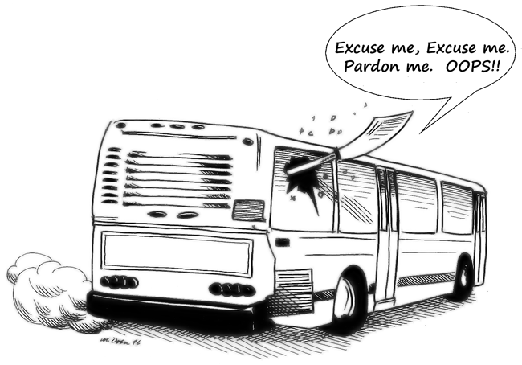

|
Yip Man1 admitted himself that he changed wing chun from what he had learned and continued to modify the art up until the day he died.
Preservation: A Universal NeedThere is in man a universal need to preserve elements of his past. This includes both accomplishments that we're proud of and atrocities we're ashamed of. Good and bad, all of them give meaning to life and chronicle the human experience.
But events, places, and great works of the arts and humanities are not the only things we preserve. Past skills are equally worthy of protection. Although some are no longer needed for the advancement and prosperity of society today, many are worthy of preservation because of their significant contributions to our history and development. Japanese sword smithery, Damascene and Toledo metallurgy, Roman engineering, and many others fall into this category.
Preservation of arts like these make sense because their development as self-defense systems ceased long ago. Their devolution from martial arts to martial ways – hastened by the increased effectiveness of modern weapons – rendered these once potent classical Japanese weapons impractical for self-defense in twentieth-century urban environments. Practitioners of these arts may dispute the contention that they are no longer effective for self-defense, arguing that the weapons in question are still lethal. In this, they are correct; the Japanese katana or sword is, indeed, a formidable weapon. However, there are compelling reasons why weapons like the sword, the staff, the halberd, and others are, nonetheless, impractical today as self-defense weapons and systems of personal defense – principally, the difficulty in transporting and accessing them.  Realistically, carrying around a six-foot staff or eight-foot-long halberd in one's car or on a crowded bus is simply impractical – not to mention quickly whipping the thing out when you need it. Carry a samurai sword with you down the street and you will very likely be stopped and questioned by police so frequently that you may never arrive at your destination. Ancient Japanese arts aren't the only ones facing this reality. The idea of carrying even some of the smaller, more exotic weapons, like the Chinese deer-antler knife or butterfly sword, or Filipino kris under your coat or in your briefcase is none too practical either – especially if they're ready for use (sharpened). For arts and weapons like these, preservation makes sense because their value as self-defense weapons and systems of combat has long since been surpassed by their cultural and historical value. From the modern martial artist's perspective, preserving these arts is no problem. For us, the issue becomes a problem when people try to preserve arts that are still capable of providing practical self-defense. When Preservation Destroys This desire to preserve the teacher's art is not just a Japanese, Chinese, or Korean thing. Many fine practitioners from any number of Asian cultures fall prey to what is otherwise a noble goal. For example, I know instructors of both Indonesian and Filipino extract whose stated purpose in sharing their martial art knowledge is the advancement and preservation of their (or their teacher's) heritage and culture. I fully support the preservation of one's heritage and cultural traditions; however, I think it unreasonable to expect those of another culture to adopt the same goal for a culture that is not their own. If, for example, a Brazilian teaching jiu-jitsu seeks to preserve his Brazilian heritage and culture as part of his instruction, is it reasonable for him to ask his German-, Lithuanian-, and Mexican-American students to also preserve his cultural heritage? I think not. If, on the other hand, one's martial art is actually a martial way, where the purpose is self-improvement, perfection of character, or spiritual enlightenment, then preservation is, again, reasonable.
I remember finding a small beetle once. It appeared to have a body made of iridescent gold and silver. Each section of its body was delineated by a thin black line. It was incredibility beautiful. I gave the beetle to a friend who thought she would preserve its beauty by sealing it in plastic (we both thought the creature was dead). Placing the beetle in the liquid plastic, we discovered it was, indeed, alive! By that time, however, it was too late and the beetle died. Amazingly, as the creature expired, its beautiful shell diminished and all the gold and silver vanished. It looked now like an ordinary bug. You see, the real beauty (or terror) in any living thing is in its life. A martial art is exactly like that!
Sabres And SamuraiIn this life, the only sure and constant is change, and martial arts must change as well. The cavalry sabre evolved into the foil of the gentry because gentlemen rarely, if ever, faced armored opponents. When a gentleman used his weapon, it was not against someone wearing, for example, a breastplate. The foil was designed to penetrate cloth and flesh, not armor, and techniques for its use evolved accordingly. The development of the popular samurai sword followed a similar path.
Martial art training and study preserve the tradition of change by adapting to the ever-changing combat environment. In peacetime, "combat-proven techniques" (i.e., military and counterterrorism techniques) are reserved for those needing them. This does not exclude them from the civilian martial artist's arsenal; it just keeps them in context. The preservationist's goal is commendable, but it is ill-conceived when it comes to effective martial art systems and techniques. We honor past martial art masters by continuing the tradition that is the strength of their arts – namely, the tradition of adaptation and change. Filipino and Indonesian martial arts remain effective today because of that tradition. Do that, and you pay the greatest honor to those masters and their arts. Preserve their arts in their original form and, rest assured, in just one generation you will have reduced them to little more than museum pieces. Were they to return from the dead, I believe the great masters would much rather see their arts still alive and growing than preserved and lifeless. |


|
Footnotes:
|
|
©Copyright Bob Orlando, 1993-2016 All rights reserved. |
http://www.OrlandoKuntao.com
E-mail: Ron@OrlandoKuntao.com |
Last update:
Aug. 6, 2016 by Bob Orlando |